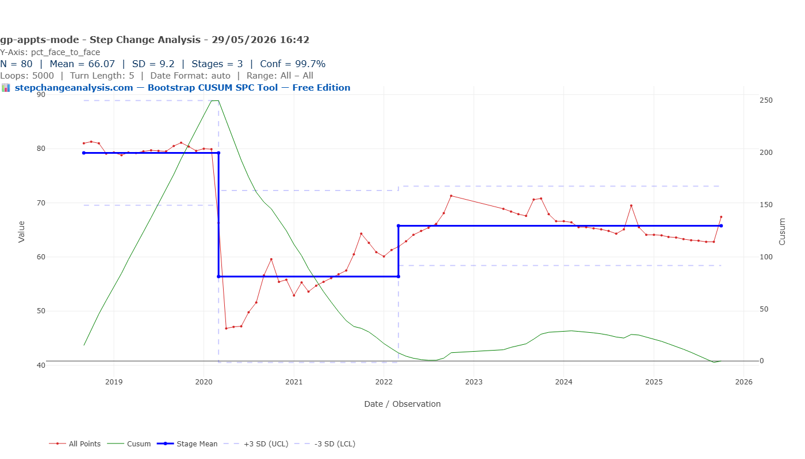
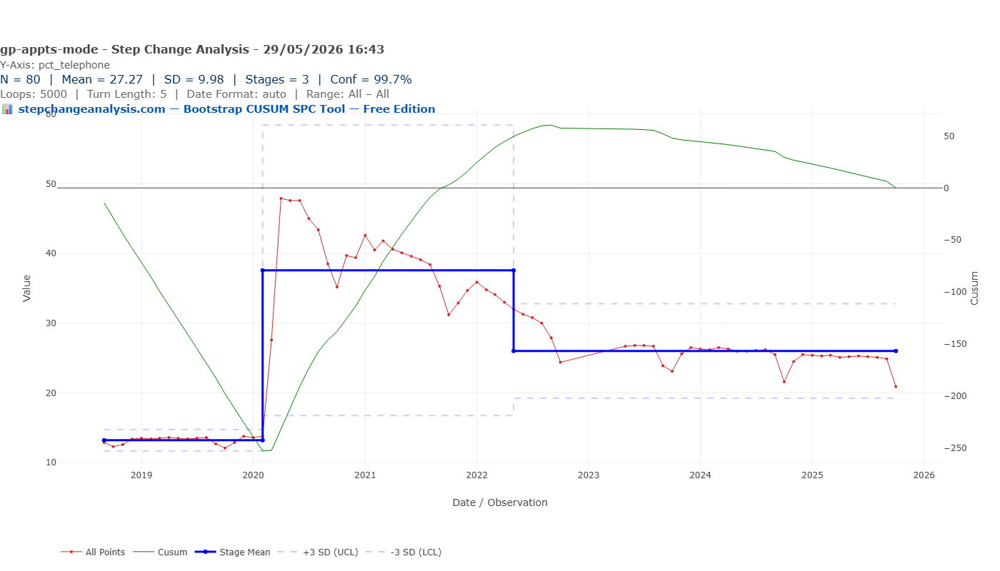
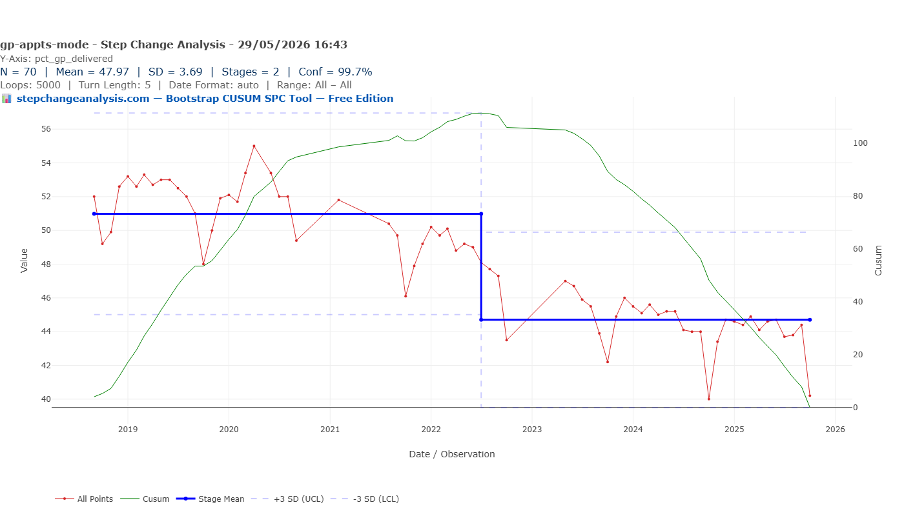
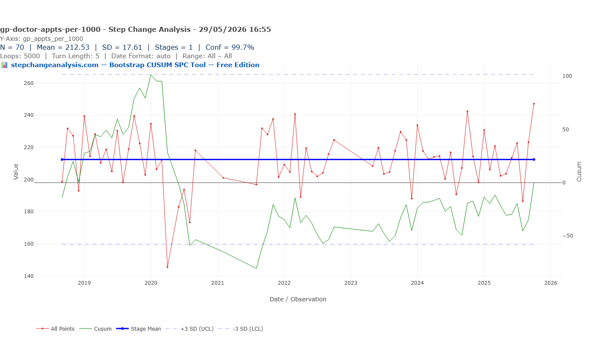

More GP Appointments Recorded, Fewer Patients Feeling Seen
Bootstrap CUSUM applied to 80 months of NHS GP appointments data finds three structural changes — and one finding that cuts through all the noise: actual GP doctor contact rates have not changed since 2018.
Same Data, Three Charts, Three Very Different Stories explains what the green CUSUM line means and why it detects structural change that other charts miss — including a step-by-step guide to reading the chart. Takes 5 minutes and makes every chart in this article easier to read.
Read above first 📚 Glossary — CUSUM, Deming, Meadows, Joiner, PDSA and moreTable of contents — click to expand or collapse
- The headline number is misleading
- COVID changed how, not how many
- Face-to-face: three stages, one permanent change
- Telephone: tripled, then stabilised
- Mid-2022: restructuring, not recovery
- What does GP workforce share actually mean?
- The wood from the trees
- Demand up, capacity down
- Why is the GP contact rate unchanged?
- Are patients better served? The quality question
- Is this a uniquely British problem?
- Where did the unmet demand go?
- What Deming would ask
- The system that built the NHS, and the system that is failing it
- Data notes and methodology
The headline number is misleading
The government says GP access is at record levels. The BMA says GPs are overwhelmed and under-resourced. The media runs stories about patients unable to get through at 8am. Everyone is arguing about GP access. Nobody is running Bootstrap CUSUM on the data.
The NHS England GP Appointments Data (GPAD — the monthly national dataset covering every appointment recorded across all GP practices in England) has been published since 2018. Stitching together three releases gives 80 monthly observations from September 2018 to October 2025 — spanning the pre-COVID baseline, the pandemic, the recovery, and the present. Bootstrap CUSUM applied to that series asks: what structurally changed, when, and with what confidence?
The headline figure is total appointments per 1000 registered patients. In September 2018, the pre-COVID baseline average was 422 appointments per 1000 patients per month. By October 2025 it was 615 — 46% above baseline. Record numbers. Case closed?
Bootstrap CUSUM applied to total appointments per 1000 finds two stages at 99.7% confidence: a pre-2022 stage mean of 415, and a post-2022 stage mean of 479. The structural step-up happened in mid-2022 — not during COVID recovery, but 18 months after restrictions lifted. And the green CUSUM line is still rising at the right edge of the chart, suggesting the process has not yet stabilised. The October 2025 spike to 615 is at the upper Shewhart limit and is likely a special cause rather than the new mean.
The question is what is being counted. From 2020–21 onwards, a new national category system captured activity that was always happening but not recorded. More importantly, the Additional Roles Reimbursement Scheme (ARRS) — clinical pharmacists, physiotherapists, social prescribers, paramedics — means many appointments counted in the GPAD are not with a GP. The total appointment count is real. But it is not the same as GP access.
COVID changed how, not how many
The most dramatic event in the entire 80-month series is March and April 2020. Total appointments per 1000 fell from 450 in January 2020 to 265 in April 2020 — a 37% collapse in a single month. That is the largest single structural shock in the dataset. It is visible in every series, undeniable in every chart.
But Bootstrap CUSUM on total appointments finds only two stages — and neither boundary falls in April 2020. The COVID trough was deep but temporary. The process recovered to its pre-COVID mean within roughly 18 months, and the CUSUM accumulated that recovery as common cause variation around a stable long-run mean. The structural change came later, in 2022, for different reasons.
What COVID did change — structurally and permanently — was how appointments were delivered. The mode mix story is the real COVID story.
Face-to-face: three stages, one permanent change

Bootstrap CUSUM on the face-to-face percentage finds three stages at 99.7% confidence — as clean a structural change story as any in the published articles on this site.
| Stage | Period | Mean | What happened |
|---|---|---|---|
| Stage 1 | Sep 2018 – Feb 2020 | 79% | Pre-COVID baseline. Tight variation. Stable for at least 18 months before the shock. |
| Stage 2 | Mar 2020 – mid 2022 | 57% | COVID collapse. Face-to-face fell to 47% in April 2020. Partial, gradual recovery through 2021–22 as practices reopened and NHS England increased pressure to restore in-person access. |
| Stage 3 | mid 2022 – Oct 2025 | 65% | New normal. The CUSUM line in this stage hovers around zero — statistically flat. Face-to-face is not recovering further. 14 percentage points below the pre-COVID baseline. |
The shape of the green CUSUM line in Stage 3 is the critical observation. It is not rising — there is no upward slope suggesting further recovery. It is not falling — there is no ongoing deterioration. It is fluctuating around zero: a process in statistical control at 65% face-to-face. This is the new normal.
The honest finding
The 2022 GP Access Recovery Plan — NHS England’s push to restore in-person appointments — produced a detectable structural change at 99.7% confidence. Face-to-face rose from 57% to 65%. That is real and should be acknowledged.
But it stopped at 65%, not 79% — the pre-COVID baseline. The remaining 14 percentage points have not recovered and the CUSUM says they will not recover under the current system. The recovery plan succeeded in shifting the mean. It did not restore the pre-COVID normal.
Telephone: tripled, then stabilised

The telephone series is the mirror image of the face-to-face series and tells exactly the same story with the same three change points. Pre-COVID: 13%. COVID peak: 48%. New settled level: 26%.
Telephone appointments doubled as a share of all contacts. Like the face-to-face recovery, the decline from the COVID peak is real and statistically confirmed. Also like the face-to-face recovery, it stopped well short of the pre-COVID baseline. The CUSUM in Stage 3 is flat.
The pre-COVID mode mix — 79% face-to-face, 13% telephone — is gone. The new mode mix — 65% face-to-face, 26% telephone — has stabilised. Both charts, at 99.7% confidence, say the same thing: this is now the system.
Mid-2022: restructuring, not recovery
Three of the four Bootstrap CUSUM series analysed in this article find a structural change point in mid-2022 — approximately June to August 2022. Total appointments stepped up. Face-to-face partially recovered. GP workforce share stepped down. All three at 99.7% confidence.
The political narrative around this period frames it as GP access recovery — the result of the 2022 Access Recovery Plan, which mandated a return to in-person appointments and set targets for face-to-face percentages.
Deming had a specific objection to targets of this kind. Setting a target for face-to-face percentage without changing the capacity, staffing, and system that determines how appointments are allocated is precisely what he called a numerical goal without a method. The target moved the percentage — the Bootstrap CUSUM confirms it, from 57% to 65%. But it stopped at 65% because the underlying system capacity had not changed. The target reached the limit of what the unchanged system could deliver, and stopped there. A face-to-face target also creates pressure on the metric rather than the underlying need: practices under pressure to hit a percentage will convert telephone to face-to-face appointments whether or not the conversion is clinically indicated. The target measures activity, not outcome.
Bootstrap CUSUM confirms that something structural did happen in mid-2022. But looking at what changed in each series simultaneously:
- Total appointments per 1000: stepped UP from 415 to 479
- Face-to-face %: stepped UP from 57% to 65%
- Telephone %: stepped DOWN from 37% to 26%
- GP workforce share: stepped DOWN from 51% to 45%
More appointments, more face-to-face, fewer telephone — and fewer of those appointments delivered by a GP. This is not the fingerprint of a recovery. It is the fingerprint of a system restructuring — more contacts overall, absorbed by a growing ARRs workforce, with GPs maintaining roughly the same absolute contact rate while their share of a larger total fell.
The ARRS timeline
The Additional Roles Reimbursement Scheme was introduced in 2019, funding GP practices to employ clinical pharmacists, physiotherapists, social prescribers, paramedics, and other roles. By 2022, over 26,000 additional staff had been recruited into general practice under the scheme.
Bootstrap CUSUM on GP workforce share shows the scheme’s structural impact began to appear in mid-2022 — the point at which ARRs numbers reached sufficient scale to displace GP appointments structurally rather than merely supplement them. The structural step down in GP share coincides exactly with the structural step up in total appointment volume. The system grew. The GP’s proportion of it shrank.
What does GP workforce share actually mean?

Of every 100 appointments in the GPAD (GP Appointments Data), how many were with a GP doctor rather than someone else? Pre-COVID this was 52 in every 100. By October 2025 it is 40 in every 100. Bootstrap CUSUM finds a structural step-down from 51% to 45% in mid-2022 at 99.7% confidence, and the CUSUM line is still gently falling — the shift has not stabilised.
The remaining 55–60 appointments in every 100 are with a mix of practice nurses (who have always been part of the primary care workforce and are not ARRs roles), healthcare assistants, and an increasingly large contingent of ARRs (Additional Roles Reimbursement Scheme) staff. Understanding what ARRs means is essential to understanding what these charts are actually showing.
What are ARRs roles?
The Additional Roles Reimbursement Scheme was introduced in 2019 as part of the NHS Long Term Plan. NHS England funds GP practices and Primary Care Networks to employ non-GP clinicians alongside traditional practice staff. The roles include:
Clinical pharmacists — the most common ARRs role by far; medication reviews, prescribing support, long-term condition management. Paramedics — urgent and acute assessment; the clinician you typically see quickly for same-day concerns. First-contact physiotherapists — musculoskeletal problems without GP referral. Social prescribers — loneliness, housing, lifestyle. Mental health practitioners, dietitians, physician associates, occupational therapists.
The principle: route simpler or specialist-adjacent work to other clinicians and free up GP time for complex cases. By March 2023, 17,588 full-time equivalent ARRs staff had been commissioned by 1,223 Primary Care Networks, at a cost of £1.027 billion per year — up from £110 million in 2019–20.
The paramedic who sees you quickly for an urgent concern, the pharmacist who calls about your medications, the submission form that routes your request to the right clinician — all of this is the ARRs scheme in practice. It created the triage system. It This is what explains why GP workforce share fell while total appointment volume rose — the denominator grew faster than the GP contribution to it.
In absolute terms, the arithmetic of GP appointments per patient looks like this:
| Period | Total appts / 1000 | GP share | GP appts / 1000 |
|---|---|---|---|
| Pre-COVID (Sep 2018 – Feb 2020) | 422 | 52% | 218 |
| Post-2022 (Jul 2022 – Oct 2025) | 479 | 45% | 214 |
| Change | +14% | −7 pp | −2% (not significant) |
The system grew substantially around the GP. The GP’s absolute contact rate barely moved. Which leads directly to the centrepiece finding.
The wood from the trees

One stage. Mean 212.53. A flat blue line across the entire seven-year series. At both 90% and 99.7% confidence, Bootstrap CUSUM finds no structural change in GP doctor appointments per 1000 patients across 70 monthly observations.
The green CUSUM line tells the story with complete clarity: it collapsed during the COVID trough, recovered as practices reopened, and has been oscillating around zero ever since. A process in statistical control throughout. The April 2020 low of 146 GP appointments per 1000 — visible as the lowest red point — was deep but temporary, absorbed as a special cause within a stable long-run process. COVID was a shock. It was not a structural change in GP access.
There is an important nuance about patient experience that the data does not capture. A flat GP contact rate does not mean the experience of accessing a GP is unchanged. Pre-2018, a patient could typically ring, explain once to a receptionist, and get a GP appointment within a day or two. Now the same appointment is distributed through an online submission form, a triage decision by a clinician or algorithm, a potential redirection to a paramedic or pharmacist, and then a week’s wait for the GP slot if that is the verdict. The count is flat. The friction required to achieve it has grown substantially.
The triage system also introduces equity questions the data cannot answer. The capacity to navigate an online form, articulate symptoms clearly in writing, and wait a week for a response is not equally distributed across the population. The patients who most need a GP — older, more complex, less digitally confident — may be systematically disadvantaged by a system redesigned for those who can navigate it most easily.
Demand up, capacity down
The flat GP contact rate of 213 per 1000 per month does not mean nothing has changed. It means two forces — rising demand and falling GP capacity — have been held in an uncomfortable equilibrium by the ARRs expansion. Understanding each force separately is essential to understanding whether the current equilibrium is stable.
Demand is rising
The need for GP consultations has grown steadily and will continue to grow. Over 14 million people in England have multiple long-term health conditions — multimorbidity — and multimorbidity increased across all older age groups between 2005 and 2019, a trend that has continued since. Since 2008, the population has aged and age-specific morbidity levels have increased, meaning the need for GP practice consultations has grown while the average number of consultations per person has not kept pace. More than half of all GP consultations are now with patients with multimorbidity — patients who require longer appointments, more frequent contacts, and greater clinical complexity than a decade ago.
This is structural demand growth, not a temporary surge. It is driven by demographics and the long-run increase in chronic disease prevalence, and no policy intervention is going to reverse it. The 65+ population requiring the most primary care is growing; the 0–14 population requiring the least is shrinking. The average registered patient is older, sicker, and more medically complex than they were when the GPAD data series began in 2018.
Where does rising complexity come from?
Darzi identified rising complexity as a driver of GP demand but did not separate its causes or timeframes. The answer matters because the two drivers require fundamentally different policy responses — and conflating them produces the wrong solution.
Two different timeframes, two different causes: The long-run driver — the post-WW2 baby boomer cohort, born 1945–1955, now aged 70–80 and moving through peak multimorbidity age — was entirely predictable decades in advance. This cohort is the largest birth cohort in English history until the late 1980s, and at ages 70–80 typically manages three to five long-term conditions simultaneously. This demographic bulge moving through the healthcare system was visible in NHS planning documents from the 2000s. It was known. It was measurable. Deming would observe it was planned for inadequately. The short-run driver — COVID-accelerated complexity from 2020 onwards — was a special cause superimposed on that long-run common cause trend: Long Covid, deferred cancer and cardiovascular diagnoses, and a mental health surge all added to the complexity of the patient cohort within the 7-year GPAD window.
Survival: Medical advances mean patients who would previously have died now live with long-term consequences — cancer survivors managing treatment side-effects, cardiac patients on multiple medications, premature infants reaching adulthood with complex needs. Each successful treatment creates a long-term primary care patient who did not exist a generation ago.
Obesity and its downstream conditions: Type 2 diabetes, hypertension, osteoarthritis, sleep apnoea, non-alcoholic fatty liver disease — all obesity-related, all rising, all requiring ongoing GP management. Over 28% of English adults are obese, up from 15% in 1993. Each condition is manageable but not curable. Each requires regular monitoring, medication reviews, and GP contacts for the rest of the patient’s life.
Mental health: Diagnosed depression, anxiety, and ADHD have all risen substantially in the past decade. Whether this reflects a genuine increase in prevalence, better recognition, reduced stigma, or all three is debated — but the GP workload consequence is real regardless of cause. Mental health conditions are the single largest driver of GP consultation growth in recent years.
Polypharmacy: More conditions mean more medications. More medications mean more interactions, more side-effects, more medication reviews, and more GP contacts to manage them. A patient on eight or more medications — not uncommon in the over-75 population — requires substantially more GP time per year than a patient on two.
None of these drivers is reversible in the short term. All of them are still growing. The flat GP contact line of 213 per 1000 per month is holding steady against a rising tide of structural demand — which is exactly what Darzi observed, and exactly what Bootstrap CUSUM can now date and quantify.
📋 A note on population growth and future demand. Since 2020, net international migration has accounted for 99% of UK population growth — natural change (births minus deaths) turned negative in 2023 for the first time. This is not a political observation: the demographic mathematics are the same regardless of origin. The majority of migrants arriving in the 2020s are of working age — currently the lowest-demand group in primary care. In 40–50 years, this cohort will itself reach peak multimorbidity age (70–80), creating a second demographic bulge in the 2060s and 2070s that is already arithmetically visible today. A health system with constancy of purpose — Deming’s first point — would be planning for that peak now, exactly as it should have been planning in the 1980s for the peak now arriving. The question is whether the lesson of the baby boomer planning failure will be learned. The ONS projects the UK population reaching 72 million by 2049, with all growth from net migration. The GP workforce planning implications are measurable, dateable, and currently unaddressed.
GP capacity is falling
Between 2013 and 2023, the number of NHS general practices in England decreased by 20%, with 15% fewer qualified full-time equivalent GPs per 1000 patients, while the average practice patient list size increased by 40%. The number of fully qualified permanent GPs fell from 28,590 to 26,576 on a full-time equivalent basis between September 2015 and June 2023 — a 7% decline despite repeated government promises to increase it. Available GP time per patient fell by 10% between 2015 and 2019 alone, from 60.5 minutes per patient per year to 55.2 minutes, as patient numbers rose while the GP workforce shrank.
There is a particularly troubling dynamic identified by the BMA in 2025: despite a 39% increase in GP training places since 2014, half of all GP trainees in their final year of training between 2018 and 2024 were still not employed by a GP practice a year after qualifying. The pipeline is growing. The practices to absorb them are not. Over 1,465 independent community GP practices have closed or merged since 2015.
Why is the GP contact rate unchanged?
The Bootstrap CUSUM centrepiece finding — one flat stage, mean 212.53, no structural change across seven years — needs an explanation. It is not an accident. It is the arithmetic result of two structural forces meeting.
This matters because patients do not experience a GP appointment and an ARRs appointment as equivalent. When a patient submits an online consultation form, waits for a triage decision, is seen by a paramedic, and is then told they need a GP after all — that pathway consumes more calendar time, more patient effort, and more system resource than a direct GP appointment would have done. The count is flat. The experience is not.
There is also a question of what patients want and reasonably expect. Primary care in England was built on the registered GP list — a named doctor who knows your history, your family, and your context. The GP Patient Survey consistently shows that patients value continuity of care with a named GP above almost every other aspect of primary care experience. What the ARRs expansion delivered is more appointments with more different clinicians. What it did not deliver is more access to the clinician patients most want to see.
The patient expectation gap
It is reasonable to expect that a patient presenting with an urgent concern wants to see a doctor. The triage system routes many of those patients to a paramedic or pharmacist who may be entirely clinically appropriate for that specific problem — and for many conditions, particularly musculoskeletal and medication-related, the evidence suggests ARRs clinicians deliver equivalent or better outcomes.
But the patient does not know that at the point of submitting their online form. They know they feel unwell, they want a doctor's assessment, and they are being asked to describe their symptoms in a text box before anyone has decided whether that is what they will get. The friction is real, the uncertainty is real, and the experience of navigating a triage system when you are unwell is qualitatively different from ringing a surgery and being offered an appointment.
The GP Patient Survey captures this directly: the proportion of patients satisfied with the overall appointment-making experience fell from 68.6% in 2018 to 54.4% in 2023, despite record total appointment numbers. More appointments, lower satisfaction with getting one. The flat GP contact rate, the growing complexity of access, and the declining satisfaction are three measures of the same underlying problem.
Are patients better served? The quality question
The most important question — and the hardest to answer from appointment data alone — is whether the restructured primary care system is delivering better care. More total appointments, more ARRs staff, more triage: is the outcome better for patients?
The evidence is genuinely mixed, and honest about its limitations.
What the evidence shows
The ARRs scheme has been associated with a small improvement in patient satisfaction and perceptions of access, according to a 2024 University of Bristol NIHR-funded study. Clinical pharmacists — the most common ARRs role — are associated with reduced prescription rates, which could reflect more appropriate prescribing. First-contact physiotherapists have good evidence for clinical effectiveness in musculoskeletal conditions. Social prescribers address needs that GP appointments were never the right tool for.
These are real benefits and should not be dismissed. A patient who needs a physiotherapist and gets one quickly, without first having to see a GP who then refers them, is better served by the new model than the old.
What the evidence does not show
The same Bristol study found no improvement in the Quality and Outcomes Framework — the primary NHS measure of clinical quality in general practice. The QOF measures achievement against clinical targets for conditions including diabetes, hypertension, asthma, and mental health. A system with nearly 17,600 additional clinical staff, at a cost of over £1 billion per year, that cannot demonstrate improvement on the primary quality measure is a system whose cost-effectiveness should be questioned.
The GP Patient Survey shows overall patient satisfaction with general practice has declined since 2019. The proportion of patients rating their overall experience as good or very good fell from 83% in 2019 to 71% in 2023 before recovering slightly. The proportion saying they found it easy to get through to their surgery on the phone declined. These are patient-reported outcomes — they reflect the experience of the triage system, the waiting times, and the friction of access that the appointment count cannot capture.
The honest answer to the quality question
For specific conditions well-matched to ARRs roles — musculoskeletal, medication management, social needs — the evidence for benefit is reasonable. For the broader question of whether the restructured primary care system is delivering better overall care, the evidence is absent or negative. The QOF has not improved. Patient satisfaction has declined. The unmet demand overflow into A&E and private care suggests the system is not meeting needs it should be meeting.
What the data cannot answer — and what no currently published study has answered — is whether a patient who is triaged, seen by a paramedic, and then either discharged or referred to a GP has better clinical outcomes than a patient who saw a GP on day one. That is the key question for the next decade of primary care research. Bootstrap CUSUM can identify when structural changes happened. It cannot tell us whether those changes were improvements.
Is this a uniquely British problem?
A reasonable question at this point is whether the flat GP contact rate, the falling workforce share, and the growing access friction are features of the English NHS specifically — the result of particular policy choices — or whether this is a structural challenge facing primary care systems across the developed world.
The answer is: both. The underlying drivers are shared internationally. The severity of England’s response is not.
| Country | The shared problem | What they did differently |
|---|---|---|
| All OECD countries | The share of GPs among all doctors has fallen in most countries. On average across EU countries, only one in five doctors is a GP; two-thirds are specialists. The shift of medical graduates toward specialist careers is a global phenomenon. | Several countries acted early. France mandated that at least 40% of all new postgraduate training places go to general medicine from 2017. Belgium increased its GP training share. Portugal, Finland, Belgium, and France have maintained GP proportions above 30% of all doctors. |
| Canada | In 2023, 17% of Canadian adults reported having no regular primary care provider. Only 26% reported same- or next-day appointments. 15% of emergency department visits were for conditions manageable in primary care — a pattern almost identical to England. | Canada faces the same structural problem but has been slower to respond. The average number of patients seen per family physician fell from 1,746 in 2013 to 1,353 in 2021 — fewer patients per GP, compounding the workforce shortage. |
| UK vs OECD average | Rising multimorbidity, ageing populations, and the drift of medical graduates toward specialist careers are universal trends across high-income countries. | The UK has 15.8% fewer GPs per 1,000 population than the OECD average — one of the lowest ratios in the developed world. Primary care’s share of NHS funding fell from 24% in 2009 to 18% in 2021, while hospital spending rose. |
The honest international verdict
The GP access problem is not unique to England — the structural drivers are shared across all high-income countries with ageing populations and medical training systems that reward specialist over generalist practice. Canada, Australia, and many European countries face versions of the same challenge.
What is distinctive about England is the combination: a GP-to-patient ratio significantly below the OECD average, a primary care funding share that fell sharply during the decade when the demographic pressure was accelerating, and a workforce expansion response (ARRs) that grew everything around the GP rather than growing the GP workforce itself. France, Belgium, and Portugal are not model successes — France still has regional medical deserts and a looming retirement wave — but they made different choices about training allocation and are better placed for the demographic pressure ahead. England made the opposite choices at the opposite time.
The Bootstrap CUSUM flat line is England’s specific statistical signature of a problem that other countries have managed with more constancy of purpose. It is not inevitable. It was chosen — through decades of decisions that prioritised hospital care, specialist training, and short-term targets over the long-term GP workforce investment the demographic evidence demanded.
Where did the unmet demand go?
If GP doctor contact rates are flat — unchanged since 2018 — but need is rising and the system has introduced more friction into accessing GP care, then some patients are getting what they need through other routes, and some are not getting it at all.
A&E as the overflow valve
Minor condition attendances at A&E have reached record levels. Cough attendances rose from 44,000 in 2020–21 to 435,728 in 2024–25 — nearly tenfold. Backache rose from 211,000 to 396,000. More than 2.2 million A&E attendances in 2024–25 resulted in “no abnormality detected.” These are primary care presentations arriving in emergency departments because the primary care front door is harder to open. The Bootstrap CUSUM analysis of NHS A&E performance on this site finds four stages of structural decline across 15 years. The GP access picture helps explain why.
The private alternative
For those who can afford it, private primary care has absorbed a significant share of unmet demand. Health insurer Vitality reported private GP claims rose 374% between 2018 and 2022. The proportion of their insurance claims for primary care rose from 32% in 2019 to 55% in 2022. Private hospital admissions reached a record 898,000 in 2023. The NHS figures show flat GP contact rates for the population as a whole. They do not show whether the distribution of those contacts is equitable. The patients who supplement NHS access privately are, by definition, those who can afford to do so.
The unmet remainder
Some demand is simply not being met. The GP Patient Survey records this directly: the proportion of patients avoiding making an appointment because it was too difficult more than doubled — from 11.1% in 2021 to 27.9% in 2023. The proportion finding it easy to get through on the phone fell from 68% in 2021 to 50% in 2023, the lowest in eleven years of the survey. Five percentage points of the patient population have stopped trying, or stopped succeeding, in the time covered by this analysis. The Bootstrap CUSUM data cannot quantify this group. But the combination of rising A&E minor attendances, surging private GP use, and declining survey-reported access all point to the same conclusion: the flat GP contact rate coexists with growing unmet primary care need.
What Deming would ask
By what method? And whose system?
The 2022 Access Recovery Plan produced a detectable structural change at 99.7% confidence — total appointment volume stepped up, face-to-face partially recovered. These are real and should be acknowledged.
But the goal was to restore GP access. Bootstrap CUSUM says that goal was not achieved — not because the plan failed to change the system, but because it changed the wrong part of the system. It increased total appointment volume. It did not increase GP contact rates. The flat line across seven years is the verdict.
Darzi observed that GPs lack the resources, infrastructure, and authority to manage the complexity now arriving at their door. That is accurate. But the deeper Deming question is: whose system produced that gap? The GPs did not plan the workforce. The GPs did not set GP training numbers. The GPs did not build — or fail to build — the estate. The GPs did not design the social care funding formula that determines whether their most complex patients can be discharged from hospital or remain blocking beds. These are system decisions taken over decades by people who are not GPs.
Deming’s most cited observation is that 94% of problems are caused by the system, not the people working in it. Applied here: the GP contact rate is flat not because GPs are failing, but because the system they work in was shaped — through decades of decisions taken elsewhere — to produce exactly this outcome.
The tyranny of the short term
Deming’s first of the 14 Points is constancy of purpose — a long-term commitment to improvement that transcends short electoral cycles and quarterly targets. His specific critique of Western management was that it optimises for the visible and the immediate at the expense of the structural and the long-term. He called the resulting failure the tyranny of the short term.
The baby boomer demographic bulge — the cohort born 1945–1955 now aged 70–80, moving through peak multimorbidity — was not a surprise. The Office of Population Censuses and Surveys was tracking it from the 1970s. Academic literature on GP workforce shortages relative to an ageing population goes back to the 1980s. The King’s Fund was publishing warnings in the 1990s. The demographic peak now arriving at GP surgeries was visible and measurable 40 years ago.
What should have been decided in the 1980s and 1990s to handle the demand now arriving:
- GP training places expanded to meet 2020s demand — instead they declined; the number of fully qualified FTE GPs fell between 2015 and 2023 despite record patient list sizes
- Primary care infrastructure built for a population managing multiple long-term conditions — instead 20% of GP estate predates the founding of the NHS in 1948
- A prevention strategy that reduced the multimorbidity rate in the cohort now hitting peak demand — instead obesity rates tripled between 1993 and 2024
- A social care system capable of managing complexity at home and reducing GP workload — instead social care funding was cut from 2010 and 13,700 beds per day are occupied by patients clinically ready for discharge with nowhere to go
None of these decisions was made — because the payoff was 30 years away and the electoral cycle is five years. The Bootstrap CUSUM flat line is the statistical record of what 30 years of short-termism produces. The constraint was identifiable in 1985. Addressing it required decisions in the 1980s and 1990s. They were not made.
The trap — and what might be done within it
Training more GPs is necessary. It is not sufficient for the patient who needs to be seen next week. The GP training pipeline takes 7–10 years. England is in a structural trap: the constraint cannot be resolved overnight, and the decisions that would have avoided the trap were not made when they should have been. The question is what can be done within the 10-year lag while the pipeline fills.
Restore continuity of care. Research consistently shows that when patients see the same GP regularly, consultation time falls substantially — a GP who knows a patient’s history, context, and medication reaches a clinical decision in 8 minutes; a GP seeing that patient for the first time may need 15–20 minutes to reach the same conclusion. The move toward large practices and whoever-is-available triage has destroyed continuity at exactly the moment it is most valuable. Restoring named GP lists as an operational standard — not an aspiration — would increase effective GP capacity without a single new qualification.
Unblock social care. The 13,700 blocked beds are not a GP problem — but resolving them frees GP time as well as hospital capacity. A GP managing a complex elderly patient who cannot be discharged, reviewing medication changes made during an admission, handling calls about that patient — that is GP time consumed by a social care failure. Every discharge resolved frees GP time without requiring a new GP to qualify.
Remove non-GP tasks from GP lists. Studies consistently find that 15–30% of GP consultations are for tasks that do not require a medical degree: routine medication renewals, fit notes, chronic disease monitoring within stable parameters. Better system design — not triage on top of the GP, but genuinely removing non-GP tasks from the GP’s list — could increase effective GP contact rate within the existing workforce.
GLP-1 prevention. The new class of GLP-1 agonist drugs (semaglutide and related agents) are producing structural results in obesity reduction in clinical trials. Type 2 diabetes, hypertension, and osteoarthritis — three of the highest-volume multimorbidity drivers — all have obesity as a major modifiable risk factor. A targeted prescribing programme for high-risk groups could reduce the rate at which new patients enter the complex chronic disease cohort within 5–8 years — faster than the GP training pipeline, and addressing the demand side of the constraint rather than the supply side.
The honest assessment. None of these is a solution. All of them are partial mitigations that buy time while the training pipeline fills. The constraint — insufficient GP doctors able to assess undifferentiated complex presentations — cannot be resolved by anything other than having more such doctors. The four levers above slow the rate at which the constraint tightens. They do not remove it. England is in the trap precisely because the decisions that would have avoided it were not made. The question now is whether the decisions that would avoid the second trap — the 2060s demographic bulge — will be made while there is still time.
Goldratt: you optimised everything except the constraint
Goldratt’s Theory of Constraints states that in any system there is always one binding constraint — the weakest link that limits throughput of the whole. Improving anything other than the constraint is largely wasted effort.
The constraint in English primary care is the availability of a qualified GP doctor — specifically, access to the clinician trained and authorised to assess complex, undifferentiated, and multi-system presentations: the conditions that cannot safely be triaged to a pharmacist, physiotherapist, or paramedic.
The ARRs scheme spent £1 billion per year growing the workforce around that constraint without addressing it. More appointments with more clinicians; the same number of appointments with a GP.
The result: QOF (Quality and Outcomes Framework — the primary NHS measure of clinical quality) unchanged, GP contact rates flat, patient satisfaction down, A&E minor attendances at record levels, private GP use up 374%. A system Deming would summarise in one sentence: you set numerical targets without a method, you optimised for the short term at the expense of the long term, and you improved everything except the constraint. The Bootstrap CUSUM flat line is the proof.
The system that built the NHS, and the system that is failing it
In 1948, Aneurin Bevan created the National Health Service in a country that was genuinely bankrupt. Britain had just emerged from six years of total war, was still rationing food, and owed enormous debts to the United States. The political case for the NHS was made not despite those constraints but through them: a healthy workforce is a productive workforce, preventing illness is cheaper than treating it, and universal access regardless of ability to pay is both morally right and economically rational. The NHS was not conceived as a cost. It was conceived as an investment.
That founding act was Deming’s constancy of purpose in its most literal form: a commitment made in 1948 for a benefit that would accrue over decades, funded by a government that could not afford not to make it. Bevan understood that the time horizon of the return on investment was longer than any electoral cycle — and he made the investment anyway.
Does it all come down to the economy?
The obvious question is whether the failure of long-term GP planning is simply a money problem — government always short of cash, 50-year horizons impossible in a five-year electoral cycle.
The international evidence says no, it is not simply a money problem. France spends 12.1% of GDP on healthcare against England’s 10.5% — a difference, but not the whole explanation. France also allocated 40% of postgraduate training places to general medicine in 2017–18, and in 2019 abolished the numerus clausus cap on medical school admissions that had constrained its workforce since 1971. France is not a solved example — it still has GP shortages and regional medical deserts — but it made these decisions earlier and is better positioned for the demographic pressure ahead. The difference between France and England is not wealth. It is the timing and direction of decisions made when the evidence was already clear.
The deeper economic argument runs in the opposite direction to the one usually made. A GP appointment that catches a deteriorating diabetic patient costs approximately £30. The hospital admission that follows uncontrolled diabetes costs approximately £3,000. The GP contact is not a cost — it is a return on investment with a ratio of roughly 100:1. Primary care investment has the highest economic return in the healthcare system. The failure to invest in GP training from 2010 was not economically rational. It was a short-term budget saving that will cost multiples of itself in A&E attendances, hospital admissions, and lost productivity over the following decades.
Bevan understood this in 1948. The Bootstrap CUSUM data quantifies what forgetting it has produced.
The three observations the data suggests — for patients, for the NHS, and for government — are distinct but connected. They are offered not as prescriptions but as questions the data raises: things worth considering in light of what seven years of monthly observations actually show, rather than what the headlines have claimed.
| Audience | Questions the data raises |
|---|---|
| For patients | The 8am queue, the online form, the week’s wait — the data confirms them. They are not your imagination and not the GP’s fault. The system was redesigned around you without the GP workforce to support it. If the experience of accessing primary care feels harder than it used to, the Bootstrap CUSUM flat line suggests why: the GP contact rate is unchanged while the friction required to achieve it has grown substantially. Whether that is an acceptable trade-off is a question worth asking of those responsible for the system. |
| For the NHS | ARRs spent £1 billion per year without moving the one measure that matters — GP contact rate. That is not a criticism of the staff it funded; it is a systems observation about where the constraint lies. A question worth considering: if PCNs were measured on GP contact rates per 1000 patients rather than total appointment counts, would the picture look different? Bootstrap CUSUM applied at PCN and practice level could identify the bright spots — the practices that have genuinely improved GP contact rates — and surface what they did differently. The constraint can be identified. Whether the system is currently looking in the right place is less certain. |
| For government | The data suggests this is a system problem created by decades of decisions rather than a people problem — GPs are not failing, patients are not over-demanding. France allocated 40% of postgraduate training places to general medicine and is better positioned heading into the 2030s, having made that decision earlier; whether a similar reallocation here is feasible is a question for those with the authority and information to judge. The demographic demand peak now arriving was measurable 40 years ago; the second peak is measurable now. Whether the mechanisms exist — statutory workforce floors, independent planning, short-term visibility of the cost of inaction — to make 30-year commitments within a 5-year electoral cycle is, as the analysis above acknowledges, genuinely uncertain. The data can identify the problem precisely. It cannot make the political choices. |
- Data — 80 months of NHS GPAD, three workbooks stitched, five Bootstrap CUSUM series run across total appointments, face-to-face, telephone, GP workforce share, and GP doctor contacts per patient.
- Statistical analysis — change points dated, confidence levels earned from the data, not assumed from theory. The centrepiece: one flat stage at 99.7% confidence across seven years of GP doctor contacts. The green CUSUM line oscillating around zero. A process in statistical control throughout.
- Systems diagnosis — the flat line explained. Falling GP capacity (15% fewer FTE GPs per 1000 patients since 2013) meeting rising demand (14 million people with multiple long-term conditions, baby boomer cohort at peak multimorbidity age), held in an uncomfortable equilibrium by £1 billion per year of ARRs. The constraint identified.
- Level 3 thinking — not fix the output (record appointment numbers that don’t reflect GP access), not fix the process (triage systems that add friction without adding GP capacity), but fix the system: GP training allocation decisions taken now for a benefit in 2032, primary care funding share restored, the lesson from France acted on.
- Constancy of purpose — Bevan did it in 1948 with no money, against a demographic need that was already visible. The demographic evidence for doing it again has been available for 40 years. The Bootstrap CUSUM flat line is the statistical record of not doing it. The question is whether the next 40 years will produce a different record.
What might “doing it again” look like? Joiner Level 3 possibilities across three timeframes
Joiner’s framework asks whether we are fixing the output (Level 1), fixing the process (Level 2), or fixing the system (Level 3). Most of what has been attempted in primary care since 2010 has been Level 1 and Level 2. The following sketches what Level 3 might look like — offered as possibilities suggested by the data and the international evidence, not as prescriptions from a position of authority. Those with the access, resources, and accountability to make these decisions will have information and constraints the data does not capture.
The demographic evidence for a second major primary care investment is already in the data. The 2020s migration cohort reaching peak multimorbidity age in the 2060s. The obesity cohort now aged 30–50 becoming the next wave of complex chronic disease patients. The baby boomer lesson, unlearned, repeating.
| Timeframe | Level 3 possibilities — questions the data suggests asking |
|---|---|
| Short term 0–5 years Decisions that can be made now with results in 5–10 years |
GP training allocation. Mandate that a minimum percentage of all postgraduate medical training places go to general practice. In France, 40% of postgraduate places went to general medicine in 2017–18; France also abolished its numerus clausus cap entirely in 2019 and is expanding medical school places from 11,500 to 16,000 by 2027. France still has GP shortages — these reforms have not fully solved the problem — but they represent a direction of travel England has not matched. It takes 7–10 years to produce a qualified GP, so decisions made now produce GPs from approximately 2032. This is a policy decision, not a budget one: it costs no more to train a GP than a cardiologist. Primary care funding share. Restore primary care’s share of NHS funding from 18% toward the 24% it held in 2009. Every percentage point is approximately £1.8bn at current NHS spend. The economic case is straightforward: a GP appointment preventing a hospital admission returns roughly 100:1. Cutting primary care to balance the annual budget is borrowing from the future at a very high interest rate. Measure what matters. Hold PCNs accountable for GP contact rates per 1000 patients, not total appointment counts. Total appointments can be increased by adding ARRs appointments without increasing GP access. Apply Bootstrap CUSUM prospectively at PCN and practice level — identify the bright spots, understand what they did differently, and replicate it. GP estate. 20% of GP practice buildings predate the founding of the NHS in 1948. Modern, fit-for-purpose premises are a prerequisite for multidisciplinary team working. A capital programme for GP estate renewal is a short-term investment with a 30-year return. |
| Medium term 5–15 years What follows from short-term decisions, and structural reforms that take a full Parliament to design and implement |
The GP training dividend. Expansion of training places decided now produces newly qualified GPs from approximately 2032. The pipeline lag is unavoidable — which is why starting now, not in five years, is the critical decision. A sustained expansion over 10 years could restore the GP-to-patient ratio to 2015 levels by approximately 2040. Social care reform. 13,700 beds per day are occupied by patients clinically ready for discharge but with nowhere to go. This is Goldratt’s constraint operating in the hospital system: it backs up into A&E, which backs up into primary care as patients with unresolved conditions present repeatedly. Freeing even a fraction of those beds through properly funded community social care reduces hospital pressure, A&E overflow, and the downstream GP demand it generates. Social care reform is not separate from GP access reform — it is a precondition for it. Mental health early intervention. Mental health conditions are the single largest driver of GP consultation growth. Investment in CAMHS, community mental health, and workplace mental health support now reduces the chronic mental health burden arriving in primary care in the 2030s. Like GP training, the lag between investment and return is a decade — which makes starting now urgent. Prevention targeting the 30–50 cohort. The patients who will generate the next multimorbidity peak are aged 30–50 today. Obesity prevalence in this cohort (currently 28%) translates directly into type 2 diabetes, hypertension, and osteoarthritis in the 2040s and 2050s. A genuine prevention strategy — not a public information campaign but structural interventions at the food system level, Joiner Level 3 — that reduces obesity prevalence by even 5 percentage points in this cohort substantially reduces GP demand in the 2040s. |
| Long term 15–50 years Constancy of purpose: the decisions that require commitment beyond any single government |
Plan for the second demographic bulge. The 2020s migration cohort — currently of working age and low primary care demand — will reach 70–80 in the 2060s and 2070s. The arithmetic is visible today: training places, estate, social care capacity for that peak should be in planning documents now. The baby boomer planning failure was not ignorance — the bulge was measurable. It was the absence of constancy of purpose across governments of all parties over 40 years. The second bulge offers the opportunity to demonstrate that the lesson was learned. Rebalance medical training toward generalism permanently. The OECD specialist drift — medical graduates choosing specialist over generalist careers — is universal but not irreversible. France improved its general medicine training allocation significantly, though it has not fully solved the problem. The direction of travel matters: sustained commitment to increasing the GP training proportion across successive governments, regardless of party, is the lever available. Applying it consistently is what Deming meant by constancy of purpose — not a single policy announcement, but a sustained institutional commitment that outlasts the electoral cycle that made it. Treat primary care as economic infrastructure. Roads, railways, broadband, energy — all are treated as economic infrastructure requiring long-term capital investment regardless of short-term budget pressures, because the return on investment is measurable and favourable over a 30-year horizon. Primary care generates a comparable return: a healthy, productive workforce at full employment capacity versus one interrupted by unmanaged chronic disease. The NHS was founded on exactly this economic argument. Restoring it as the organising principle — rather than treating primary care as a cost to be minimised — is the long-term system change that the demographic evidence demands. |
The political time horizon problem
There is an obvious objection to everything in the table above. A government that commits today to expanding GP training places will not be in office when the new GPs qualify in 2032. A government that restores primary care funding to 24% of NHS spend will face the electoral cost immediately — the disruption, the resistance from hospital specialists, the upfront spending — while the benefit accrues to whoever wins the election after next. Politicians have to win elections. A 30-year planning horizon is not compatible with a 5-year electoral cycle.
Aneurin Bevan faced the same problem in 1948 — and appeared to solve it. But it is worth being precise about how he solved it, because the mechanism does not transfer straightforwardly to the current situation. Bevan did not succeed by making a persuasive long-term economic argument. He succeeded because six years of world war had done three things no peacetime politician can replicate.
First, the war had destroyed the legitimacy of the pre-war system. Conscription medical examinations had revealed publicly that millions of working-class men were unfit for service — malnourished, untreated, and failed by a system that charged for care. The case against the status quo had been made by events, not by argument. Second, six years of collective sacrifice had created a political consensus that the post-war settlement must be different — the 1945 Labour landslide was a vote against going back, not merely a vote for socialism. Third, and most importantly: the political return on Bevan’s investment was not 30 years away. People who had never seen a doctor began receiving treatment within months of the NHS opening in July 1948. The benefit was immediate, personal, and visible to every voter before the next election.
The GP workforce problem has none of these structural advantages. No equivalent event has destroyed the legitimacy of the current system — it is failing gradually and unevenly, not catastrophically and visibly. There is no shared sacrifice narrative that makes long-term investment politically inevitable. And the return on investment — more qualified GPs in 2032, lower A&E pressure in 2035, better patient outcomes in 2040 — falls entirely outside the current Parliament.
| Mechanism | What it does | Precedent |
|---|---|---|
| Statutory workforce floors | Legislate minimum GP training proportions and primary care funding floors that successive governments cannot fall below without primary legislation. Electoral cost of creating the Act falls once; the constraint persists. | Climate Change Act 2008 commits successive governments to carbon targets regardless of party. No government has repealed it. |
| Independent workforce planning | A statutory body with independent authority to set and monitor health workforce targets, modelled on the Office for Budget Responsibility for fiscal policy. Provides continuity across governments without requiring any single government to carry the full political cost. | The NHS Long Term Workforce Plan (2023) attempts this but has no statutory force and no funding guarantee beyond the current Parliament. |
| Making inaction visible now | The political argument that sometimes works for long-cycle investments is demonstrating the current cost of not investing. Bootstrap CUSUM at PCN level — linking the practices with the lowest GP contact rates to the highest downstream A&E and hospital admission rates — makes the cost of inaction visible within the current Parliament, not 30 years hence. | The NHS A&E performance data on this site shows four structural stages of decline. Not one policy intervention is visible as an upward change point. That is a political argument in the data. |
None of these mechanisms is sufficient on its own. Statutory frameworks can be repealed. Independent bodies can be defunded or ignored. Data-driven arguments can be disputed. The deeper question — which the data cannot answer — is whether the democratic system is capable of making 30-year investments in the absence of a crisis that compresses the time horizon. The international evidence suggests that some countries — those with proportional representation, stronger technocratic institutions, or less adversarial political cultures — find this easier than England. The NHS was founded in a political environment that will not recur. The question is what mechanisms exist to achieve constancy of purpose without it.
Bootstrap CUSUM cannot answer that question. What it can do — and what it has done in this article — is make the current state of the system precisely visible: a flat line in a rising tide, the statistical record of decisions not made, dateable to within months, and now requiring a response whose benefits will not be measurable within any single Parliament. Whether that response is made is a political question. That it is needed is not.
Data notes and methodology
Methodology
Data source: NHS England GP Appointments Data (GPAD), published monthly. Three summary workbooks stitched: GP_APPT_Publication_February_2021.xlsx, GP_Enhanced_APPT_Publication_October_2022.xlsx, GP_Appointment_Publication_Summary_October_2025.xlsx.
Date range: September 2018 to October 2025. Gap: November 2022 to April 2023 (7 months, bridged from adjacent releases using overlapping 30-month windows).
GP-delivered series: Pre-2022 data uses the “Healthcare Professional: GP” classification from older releases. Post-2022 uses the SDS Role Group “GP” classification. Values at the join (August–September 2021) are consistent at ~50%, supporting comparability. Both series use the same denominator: registered patients at open active practices.
Bootstrap CUSUM settings: 5,000 loops, Turn Length 5, confidence 99.7% (3-sigma) unless otherwise stated. All stage boundaries survive at both 95% and 99.7% confidence.
Known limitation: The 2020–21 national category definition change improved recording completeness and may account for part of the post-2022 volume increase. The GP-doctor-per-1000 series is less affected by this change than the total appointment series, since it tracks a specific professional group rather than total activity.